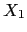
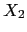

En Parse::Eyapp las acciones semánticas son convertidas en subrutinas
anónimas. Mas bien en métodos anónimos dado que el primer argumento ($_[0])
de toda acción semántica es una referencia al objeto analizador sintáctico.
Los restantes parámetros
se corresponden con los atributos de los símbolos
en la parte derecha de la regla de producción ($_[1] ...).
Esto es, si la regla es:
{ action(@_) }
cuando se ''reduzca'' por la regla la acción será llamada con argumentos
action(parserref, $X_1, $X_2, ..., $X_n) |
donde $X_1, $X_2, etc. denotan los atributos de 
, 
, etc.
y parserref es una referencia al objeto analizador sintáctico.
El valor retornado por la acción semántica es asignado como valor del atributo
del lado izquierdo de la regla  .
.
Cuando una regla
no tiene acción semántica asociada se ejecuta la acción por defecto.
La acción por defecto en eyapp es { $_[1] }:
{ $_[1] }
El efecto de tal acción
es asignar al atributo de la variable sintáctica en la parte izquierda
el atributo del primer símbolo en la parte derecha. Si la parte derecha
fuera vacía se asigna undef.
La directiva %defaultaction permite especificar una acción por defecto
alternativa. Observe esta nueva versión del programa anterior:
pl@nereida:~/LEyapp/examples$ cat -n CalcSyntaxDefaultWithHOPLexer.eyp
1 # CalcSyntaxDefaultWithHOPLexer.eyp
2 %right '='
3 %left '-' '+'
4 %left '*' '/'
5 %left NEG
6 %right '^'
7
8 %defaultaction {
9 my $parser = shift;
10
11 print $parser->YYLhs." --> ";
12 my $i = 0;
13 for ($parser->YYRightside) {
14 print "$_";
15 print "[$_[$i]]" if /NUM|VAR/;
16 print " ";
17 $i++;
18 }
19 print "\n";
20 }
21
22 %{
23 use HOP::Lexer qw(string_lexer);
24 %}
25 %%
26 line: (exp '\n')*
27 ;
28
29 exp:
30 NUM
31 | VAR
32 | VAR '=' exp
33 | exp '+' exp
34 | exp '-' exp
35 | exp '*' exp
36 | exp '/' exp
37 | '-' exp %prec NEG
38 | exp '^' exp
39 | '(' exp ')'
40 ;
El método YYLhs (línea 11) retorna el nombre de la variable sintáctica asociada con la regla actual. El método YYRightside (línea 13) devuelve la lista de nombres de los símbolos de la parte derecha de la regla de producción actual.
Observe como la modificación de la acción con defecto nos permite eliminar todas las acciones del cuerpo de la gramática.
Al ejecutar el cliente obtenemos una salida similar a la del programa anterior:
pl@nereida:~/LEyapp/examples$ eyapp CalcSyntaxDefaultWithHOPLexer.eyp
pl@nereida:~/LEyapp/examples$ cat -n prueba4.exp
1 4*3
pl@nereida:~/LEyapp/examples$ usecalcsyntaxdefaultwithhoplexer.pl prueba4.exp | cat -n
1 exp --> NUM[4]
2 exp --> NUM[3]
3 exp --> exp * exp
4 line --> STAR-2
Posiblemente llame su atención la línea line --> STAR-2 en la salida.
Es consecuencia de la existencia de la línea 26 que contiene una aplicación
del operador de repetición * a una expresión entre paréntesis:
26 line: (exp '\n')*De hecho la gramática anterior es desplegada como se indica en el fichero
CalcSyntaxDefaultWithHOPLexer.output
obtenido al compilar usando la opción -v de eyapp:
pl@nereida:~/LEyapp/examples$ eyapp -v CalcSyntaxDefaultWithHOPLexer.eyp
pl@nereida:~/LEyapp/examples$ ls -ltr | tail -1
-rw-r--r-- 1 pl users 8363 2007-10-30 11:45 CalcSyntaxDefaultWithHOPLexer.output
pl@nereida:~/LEyapp/examples$ sed -ne '/Rules/,/^$/p' CalcSyntaxDefaultWithHOPLexer.output
Rules:
------
0: $start -> line $end
1: PAREN-1 -> exp '\n'
2: STAR-2 -> STAR-2 PAREN-1
3: STAR-2 -> /* empty */
4: line -> STAR-2
5: exp -> NUM
6: exp -> VAR
7: exp -> VAR '=' exp
8: exp -> exp '+' exp
9: exp -> exp '-' exp
10: exp -> exp '*' exp
11: exp -> exp '/' exp
12: exp -> '-' exp
13: exp -> exp '^' exp
14: exp -> '(' exp ')'
En esta ocasión hemos elegido un método alternativo para construir el analizador léxico: Usar el módulo HOP::Lexer.
El módulo HOP::Lexer
es cargado en las líneas 22-24. Los delimitadores %{
y %} permiten introducir código Perl en cualquier
lugar de la sección de cabecera.
Estudie la documentación del módulo HOP::Lexer
y compare la solución que sigue con la dada
en la sección anterior ( véase 8.2).
Este es el código en la sección de cola:
42 %%
43
44 sub _Error {
.. ..................................
52 }
53
54 sub Run {
55 my($self)=shift;
56 my $input = shift;
57
58 my @lexemes = (
59 ['SPACE', qr{[ \t]+}, sub { () } ],
60 ['NUM', qr{[0-9]+(?:\.[0-9]+)?}],
61 ['VAR', qr{[A-Za-z][A-Za-z0-9_]*}],
62 ["\n", qr{\n}],
63 ['ANY', qr{.},
64 sub {
65 my ($label, $val) = @_;
66 return [ $val, $val ];
67 }
68 ]
69
70 );
71 my $lexer = string_lexer($input, @lexemes);
72
73 return $self->YYParse(
74 yylex => sub {
75 my $parser = shift;
76 my $token = $lexer->();
77 return @$token if defined($token);
78 return ('', undef);
79 },
80 yyerror => \&_Error,
81 #yydebug => 0xF
82 );
83 }
Cuando YYParse se llama con la opción yydebug activada
(descomente la línea 81 si quiere ver el efecto) la ejecución
del analizador produce un informe detallado (version de eyapp 0.83 o superior)
de su avance durante el análisis:
pl@nereida:~/LEyapp/examples$ usecalcsyntaxdefaultwithhoplexer.pl prueba4.exp >& warn pl@nereida:~/LEyapp/examples$ head -30 warn ---------------------------------------- In state 0: Stack:[0] Don't need token. Reduce using rule 3 (STAR-2 --> /* empty */): Back to state 0, then go to state 1. ---------------------------------------- In state 1: Stack:[0,1] Need token. Got >NUM< Shift and go to state 4. ---------------------------------------- In state 4: Stack:[0,1,4] Don't need token. Reduce using rule 5 (exp --> NUM): Back to state 1, then go to state 5. ---------------------------------------- In state 5: Stack:[0,1,5] Need token. Got >*< Shift and go to state 13. ---------------------------------------- In state 13: Stack:[0,1,5,13] Need token. Got >NUM< Shift and go to state 4. ---------------------------------------- In state 4: Stack:[0,1,5,13,4] Don't need token. Reduce using rule 5 (exp --> NUM): Back to state 13, then go to state 21.